How to use this lesson
§0 · From last time. Modules 1–3 gave us everything we need to build an agent: the agency dial (dial 3 is the target), the POMDP framework (termination rule: confidence > 0.83), strict tool use (no hallucinated tools), and the 7-block prompt structure. Time to build.
Business Scenario
HSBC, Monday.
Daniel has signed off on the Lumen-style pilot. Aisha and team will see Sherpa's recommendations starting Friday; if accuracy and cost are within targets after a 2-week shadow run, Sherpa goes live.
"Build the simplest thing that could possibly work," Priya tells you. "We can add cleverness in Module 4.2. For now: ReAct, four tools, the termination rule from Lesson 2.1, and the prompt structure from 3.4."
Bridge to Topic
ReAct is the minimum-viable agent architecture. Everything else in this module adds to it. Building it well first sets the standard for what gets added.
Mind Map

Mermaid source
mindmap
root((Sherpa v1))
Loop
Thought
Action
Observation
Answer
Tools
query_GL
query_counterparty
query_settlement
query_static
State
Belief
Step count
Trace
Termination
Confidence above 0.83
Step cap 8
No same tool twice
Elaboration
4.1 The loop, fully specified
type Step =
| { kind: "thought"; text: string }
| { kind: "action"; tool: ToolName; args: unknown; id: string }
| { kind: "observation"; id: string; result: unknown }
| { kind: "answer"; classification: BreakClass; confidence: number; rationale: string };
interface Trace {
steps: Step[];
callCounts: Record<ToolName, number>;
}
The trace is the agent's complete state. The Markov property holds because the model only sees the trace + system prompt.
4.2 The minimum-viable ReAct
async function classify(breakId: string): Promise<Classification> {
const trace: Trace = { steps: [], callCounts: {} };
const tools = makeTools(breakId);
for (let step = 0; step < MAX_STEPS; step++) {
const next = await llm.callWithTools({
system: SHERPA_SYSTEM_PROMPT,
messages: renderTrace(trace, breakId),
tools: toolSpecs(tools),
});
trace.steps.push(next);
if (next.kind === "answer") {
return next as Classification;
}
if (next.kind === "action") {
assertNoRepeat(trace, next);
const result = await invokeTool(tools, next);
trace.steps.push({ kind: "observation", id: next.id, result });
trace.callCounts[next.tool] = (trace.callCounts[next.tool] ?? 0) + 1;
}
}
throw new MaxStepsExceeded(trace);
}
200 lines including error handling. The simplicity is the point.
4.3 The system prompt
Using the 7-block structure from Lesson 3.4:
[ROLE]
You are Sherpa, a reconciliation agent for HSBC's mid-office.
[MISSION]
Classify cross-border SWIFT settlement breaks into one of
{amount_diff, counterparty_mismatch, stale_static, duplicate, unknown}
with full evidence trail.
[PRIORITIES]
1. Correctness with evidence (every claim cites a tool observation)
2. Low tool-call cost (prefer high-information tools)
3. Speed (within those constraints)
[TOOLS]
(served via the strict tool-use mechanism)
[CONSTRAINTS]
1. Never answer with confidence > 0.83 unless at least one tool
observation supports the chosen class.
2. Never call the same tool with the same arguments twice.
3. Stop after 8 tool calls total.
4. If still uncertain after the budget, classify as 'unknown'
with the trace as rationale.
[EXAMPLES]
(3 worked traces, one per common failure mode)
[OUTPUT]
End with the AnswerSchema JSON. Nothing after.
4.4 Tool descriptions (CRUD-style precision)
const tools = {
query_GL: {
description: "Get the GL entry for this break. Returns amount, currency, posting date. Use to verify the recorded settlement amount against the SWIFT amount.",
input_schema: { /* ... */ },
},
query_counterparty: {
description: "Get counterparty risk tier, settlement instructions, and known issue history. Use to test counterparty_mismatch hypothesis.",
input_schema: { /* ... */ },
},
// ... etc
};
Following Lesson 3.2: lead with when to use, state what's returned, hint at next steps.
Problem Statement
Implement Sherpa v1. Specifically:
- Write the
classifyfunction. - Write the system prompt using the 7-block structure.
- Write the tool descriptions.
- Write a 5-task eval set and report pass rate.
Solution Walkthrough
The full source ships as lab-4.1/ (in the course repo). Key implementation notes:
- Termination heuristic from Lesson 2.1: the model is told to emit confidence; deterministic code (not the model) decides whether to commit. This puts the budget rule in code, not in prompts.
- Repeat detection from Lesson 3.2: track
(tool, hash(args))per trace; refuse re-execution and tell the model. - Trace rendering: pretty-print the trace as XML-ish tags so the model attends to structure (
<thought>...</thought>,<action>...</action>,<observation>...</observation>).
Eval results (5-task pilot): 4/5 correct (80%). The miss was a novel break shape (stale fee schedule on a new counterparty) — the agent correctly flagged 'unknown'. Daniel calls this a pass for v1.
Mathematical Foundation
7.1 ReAct as POMDP approximation
Sherpa v1 approximates POMDP optimal-policy behaviour with:
- Belief: the trace itself (no explicit distribution).
- Belief update: the model conditions on the trace each turn (implicit Bayes).
- Termination: confidence threshold (approximates "VoPI < cost").
The implicit-belief approach saves us from designing an explicit state space (which doesn't generalise) at the cost of an opaque belief (which we mitigate with elicited confidence).
7.2 Expected cost per task
For v1 on the pilot eval: $$ \mathbb{E}[\text{cost}] = \mathbb{E}[\text{steps}] \cdot (c_{\text{LLM}} + c_{\text{tool}}) = 4.2 \cdot ($0.008 + $0.005) = $0.054 $$
Below Daniel's $0.12/case budget. Headroom for added cleverness later.
Technical Deep-Dive
8.1 The "ask for confidence" trick
Modern models are reasonably calibrated when you ask them to emit confidence. Best prompt:
End your answer with:
CONFIDENCE: <0.0 to 1.0>
RATIONALE: <one sentence linking each piece of evidence>
The rationale field forces the model to ground confidence in the trace — anti-anchoring measure from Lesson 2.3.
8.2 Trace rendering for attention
Render the trace as structured tags. The model attends to syntactic landmarks; tags create them.
8.3 Error recovery for tool failures
Tool returns an error:
- Inject the error as the observation.
- Tell the model the tool failed and why.
- Let the model decide whether to retry, switch tools, or abort.
Do not hide tool errors. Hidden errors make traces undebuggable.
What This Unlocks
- Lesson 4.2 adds memory across runs (Sherpa learns from prior nights).
- Lesson 4.3 adds reflection (Sherpa critiques its own traces).
- Lesson 4.4 adds explicit planning (Sherpa decomposes complex breaks).
- Lesson 4.5 composes all into the production hybrid pattern.